GAMES202 — Real-Time High Quality Rendering Note2: Environment Lighting and Precomputed Radiance Transfer
对应 Lecture 5 的后半、Lecture 6 和 Lecture 7 的前半。主题是环境光照下怎么做 shading 和 shadow。
1. Shading from environment lighting
1.1 问题
环境光是一张表示远处所有方向入射光的图（spherical map 或 cube map）。用它给一个点 着色（先不考虑阴影），非正式地叫 Image-Based Lighting（IBL），就是解渲染方程
（去掉可见性）。通用解法是 Monte Carlo 积分，但需要大量样本，可能很慢。Shader 里一般不喜欢采样（会引入噪声，还需要去噪）。能不能避免采样？
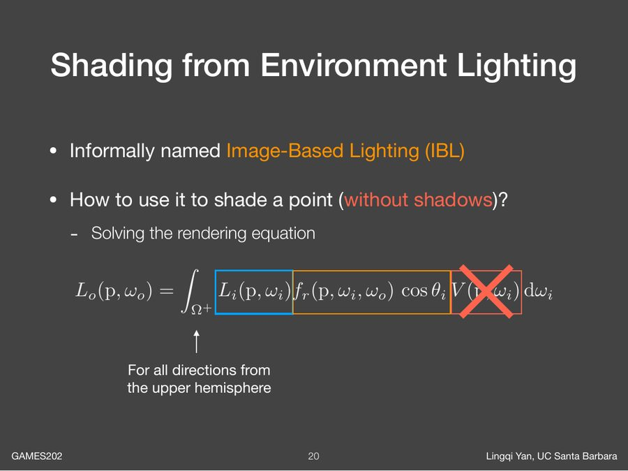
1.2 观察
- BRDF 是 glossy 的：support 小
- BRDF 是 diffuse 的：光滑
正好是上一篇那个近似成立的两个条件！
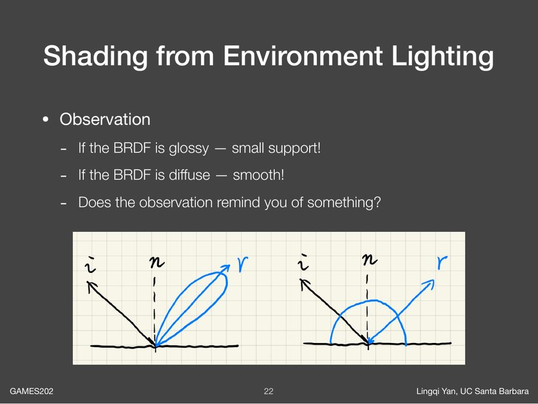
1.3 The split sum：第一阶段
回忆近似（积分域改成 BRDF 的 support \(\Omega_G\)）：
BRDF 在任何情况下都满足准确性条件，所以可以放心地把光照项拿出来：
注意和阴影里的用法不同：那里拿出来的是可见性，这里拿出来的是光照。
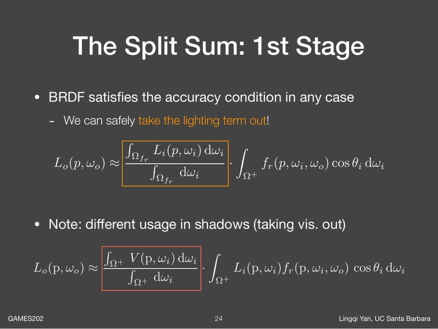
第一项是在 BRDF 的 support 范围内对环境光取平均，即对环境光做 prefiltering （模糊）。预先生成一组用不同大小滤波过的环境光（对应不同 roughness），中间的滤波 尺寸用三线性插值近似。然后在镜面反射方向 r 查询 prefiltered 的环境光即可： prefiltering + 单次查询 = 不滤波 + 多次查询。
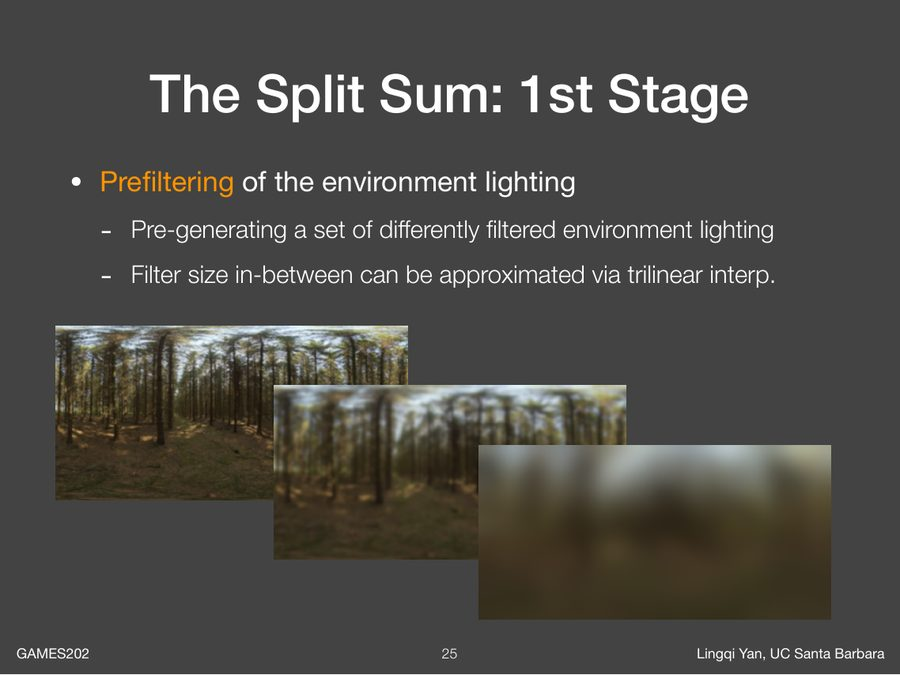
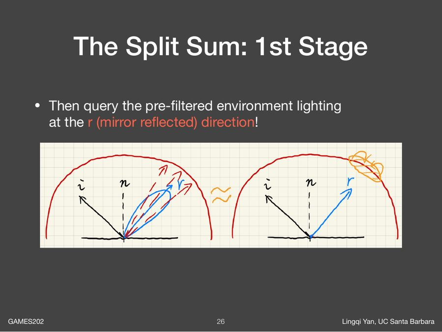
1.4 The split sum：第二阶段
第二项仍是一个积分。怎么避免采样？想法：对所有可能的变量组合预计算它的值 （roughness、颜色即 Fresnel 项……），但这会是一张维度极高的巨大表。
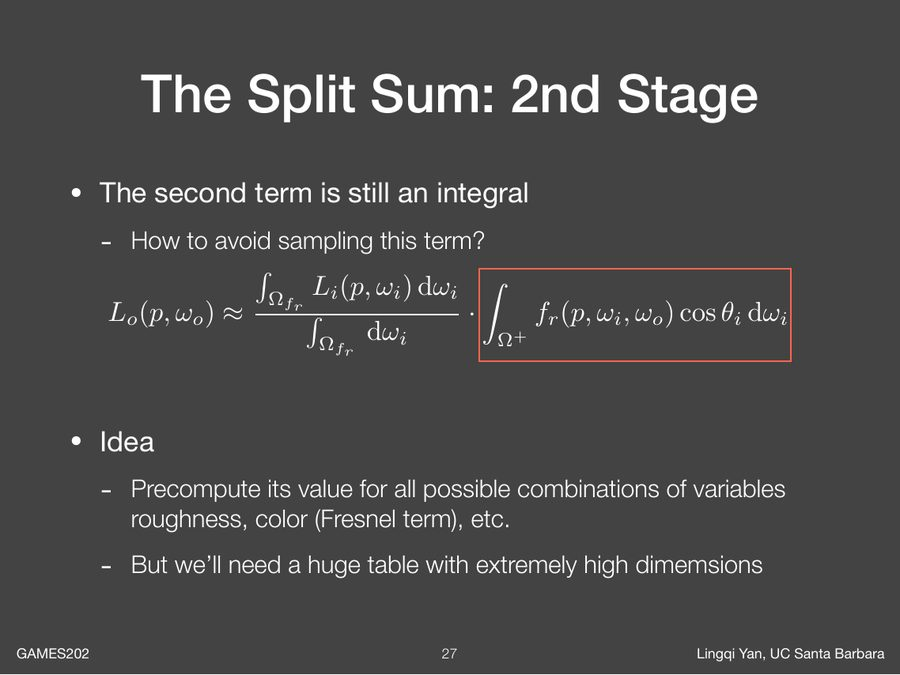
回忆 microfacet BRDF：\(f(\mathbf{i}, \mathbf{o}) = \frac{F(\mathbf{i}, \mathbf{h}) G(\mathbf{i}, \mathbf{o}, \mathbf{h}) D(\mathbf{h})}{4 (\mathbf{n} \cdot \mathbf{i})(\mathbf{n} \cdot \mathbf{o})}\)。 Fresnel 项用 Schlick 近似 \(R(\theta) = R_0 + (1 - R_0)(1 - \cos\theta)^5\)，NDF 用 Beckmann 分布 \(D(h) = \frac{e^{-\tan^2\theta_h / \alpha^2}}{\pi \alpha^2 \cos^4\theta_h}\)。 所以第二项的变量是 \(R_0\)（base color）、roughness \(\alpha\)、入射角 \(\theta\)，三维。
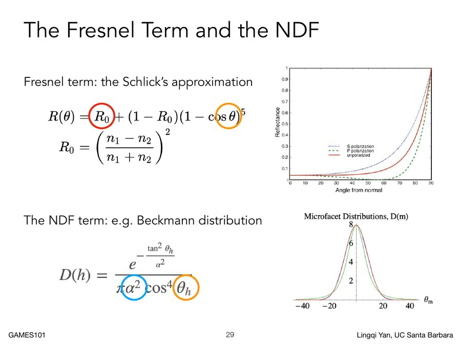
再拆一次变量。Schlick 近似的 Fresnel 项很简单，只有 base color \(R_0\) 和半角 \(\theta\)。把它代入第二项，base color 被提取出来：
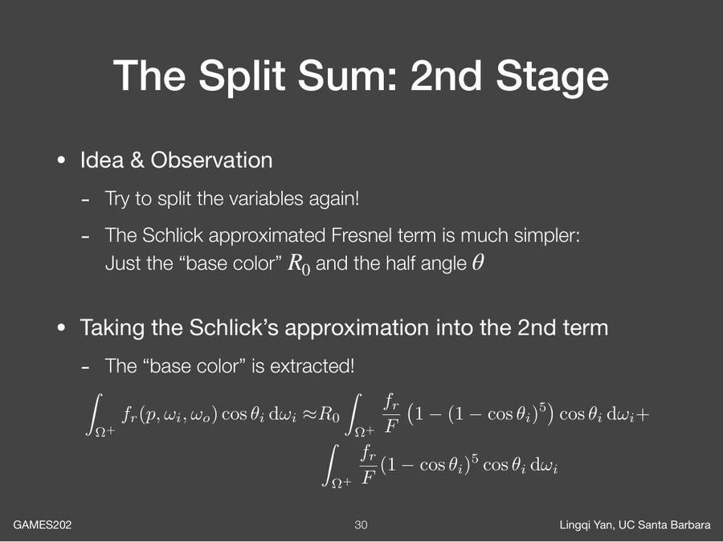
两个积分都可以预计算：每个积分对每一对 (roughness, incident angle) 给出一个值， 所以每个积分是一张 2D 表（纹理）。
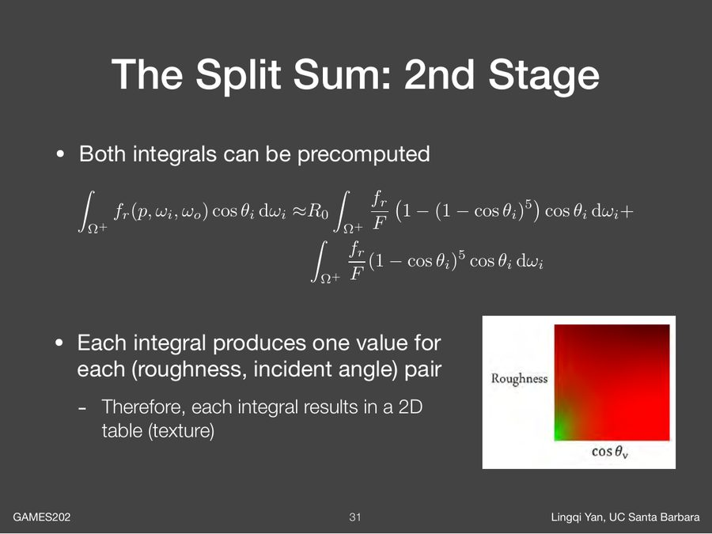
最终完全避免了采样，非常快而且结果几乎一样。工业界把积分写成求和，所以叫 split sum 而不是 split integral。这就是 UE4 的 IBL 方案（Karis 2013）。
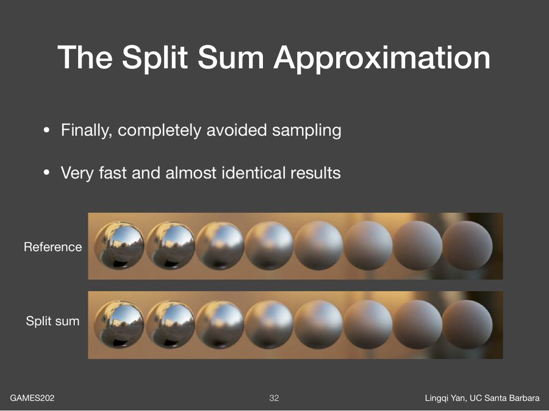
2. Shadow from environment lighting
一般来说这对实时渲染非常困难。两种看法：
- 作为 many-light 问题：shadow map 的代价与光源数线性相关，环境光相当于无数 个光源
- 作为采样问题：可见性项 \(V\) 可以任意复杂，而且不能轻易地和环境光分离 （两个条件都不满足）
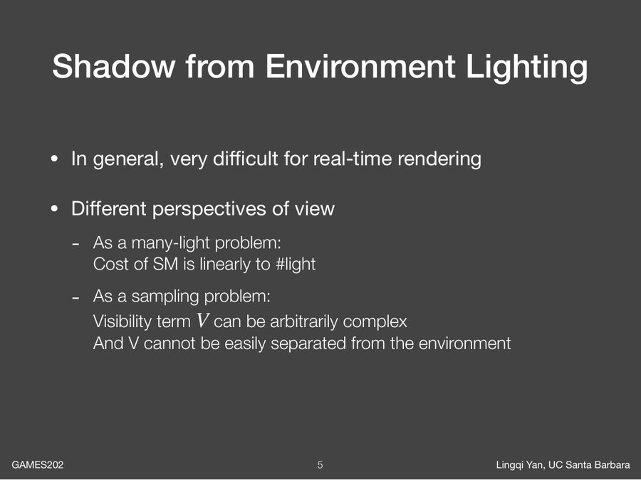
工业界的方案：只对最亮的一个（或几个）光源生成阴影。相关研究：imperfect shadow maps、light cuts、RTRT（可能是终极方案）、precomputed radiance transfer。
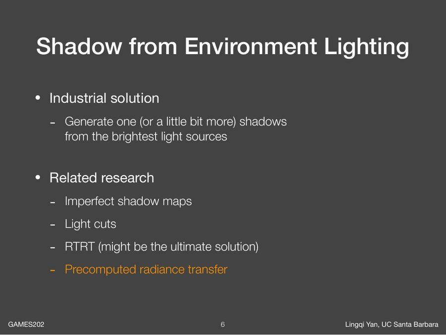
3. 背景知识：频率与基函数
Fourier transform 把函数表示成正弦、余弦的加权和；滤波是去掉某些频率成分； 卷积定理：空域卷积 = 频域乘积。
一个一般性的理解：任何 product integral \(\int_\Omega f(x) g(x) \, dx\) 都可以看作 滤波。低频 = 光滑 / 变化慢。积分的频率是各个因子中最低的那个：diffuse BRDF 是低通滤波器，所以 diffuse 物体在高频环境光下的 shading 仍然是低频的。
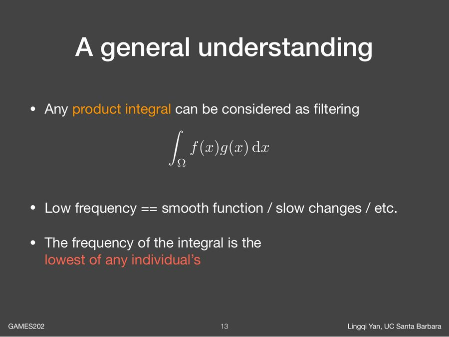
Basis functions：一组可以用来表示其他函数的函数，\(f(x) = \sum_i c_i B_i(x)\)。 Fourier 级数是一组基函数，多项式级数也可以是。
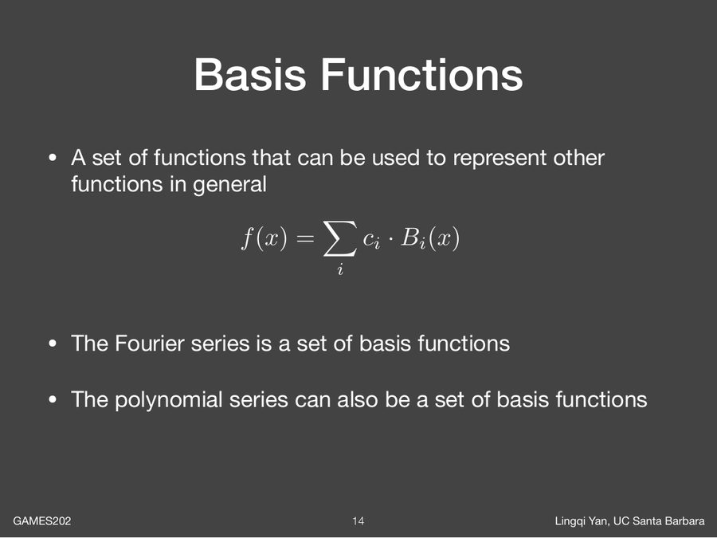
4. Spherical Harmonics（SH）
球谐函数：一组定义在球面上的 2D 基函数 \(B_i(\omega)\)，类比 1D 的 Fourier 级数。按阶数 \(l\) 排列，第 \(l\) 阶有 \(2l + 1\) 个（\(m = -l, \dots, l\)），前 \(n\) 阶共 \(n^2\) 个。每个 SH 基函数关联一个（Legendre）多项式。
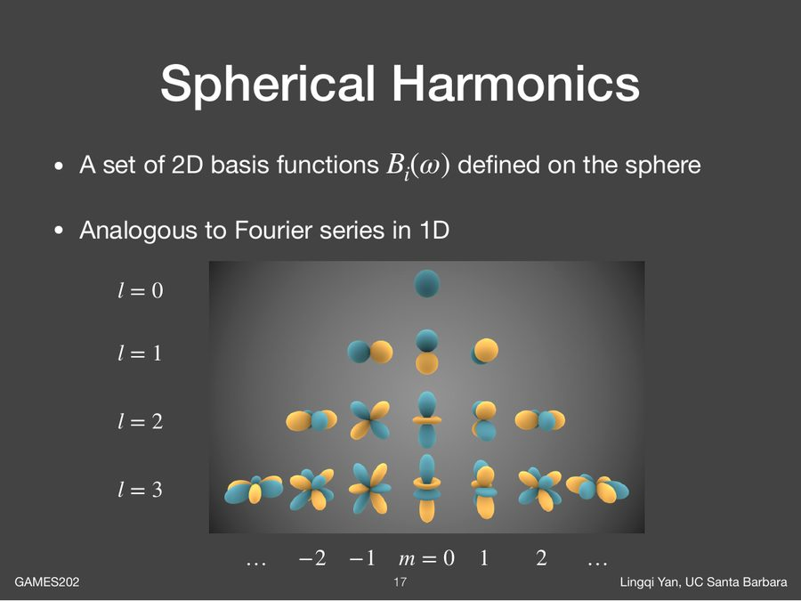
- Projection：得到每个基函数的系数 \(c_i = \int_\Omega f(\omega) B_i(\omega) \, d\omega\)
- Reconstruction：用（截断的）系数和基函数恢复原函数 \(f(\omega) \approx \sum_i c_i B_i(\omega)\)
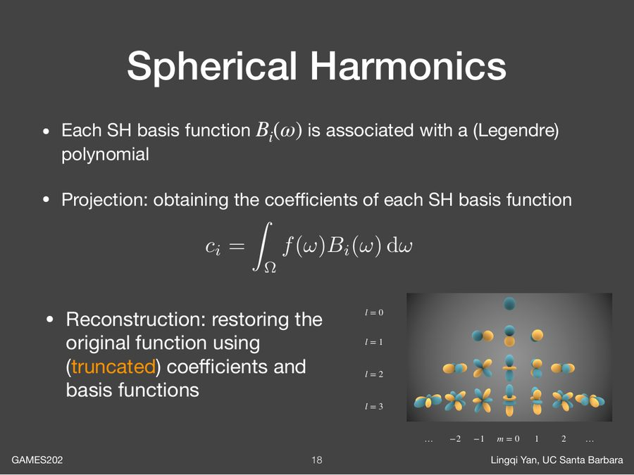
4.1 Prefiltering 与 SH（Ramamoorthi & Hanrahan 01）
Prefiltering + 单次查询 = 不滤波 + 多次查询。对 diffuse 物体，只需要以法线 \(\mathbf{n}\) 为中心、在半球上做 cosine 加权的平均，即 irradiance \(E(\mathbf{n})\)。
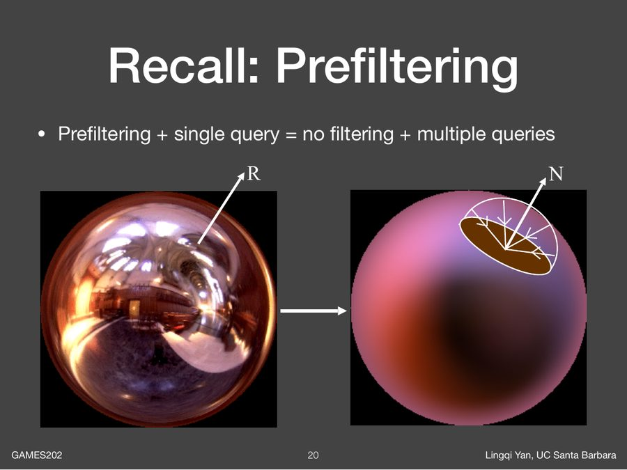
Analytic irradiance formula：diffuse BRDF 像一个低通滤波器。把环境光投影到 SH 得到 \(L_{lm}\)，irradiance 的 SH 系数是
\(A_l\) 随 \(l\) 急剧衰减：\(A_0 = \pi\)，\(A_1 = 2\pi/3\)，\(A_2 = \pi/4\)，之后几乎为零。 所以环境光的高频对 diffuse shading 没有贡献。
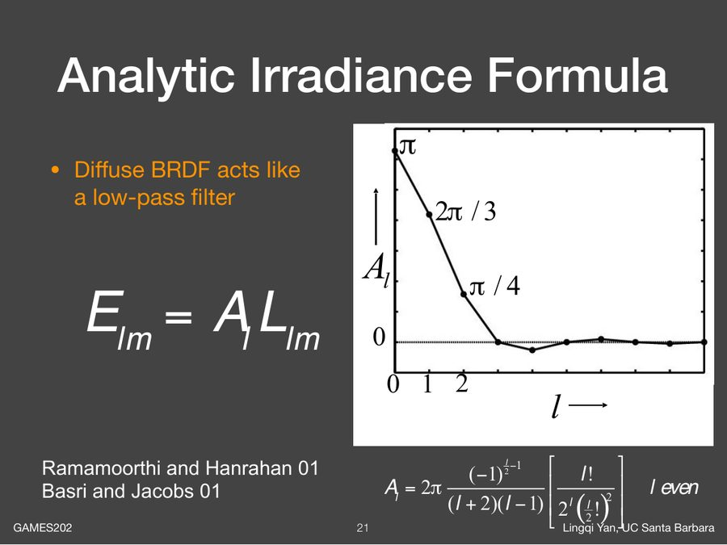
9 参数近似：用 0 阶（1 项）RMS 误差 25%，1 阶（4 项）8%，2 阶（9 项）1%。 对任意光照，平均误差小于 3%（Basri & Jacobs 01）。也就是说，用前 3 阶 SH 共 9 个 系数就能几乎完美地表示 diffuse 物体在任意环境光下的 shading。
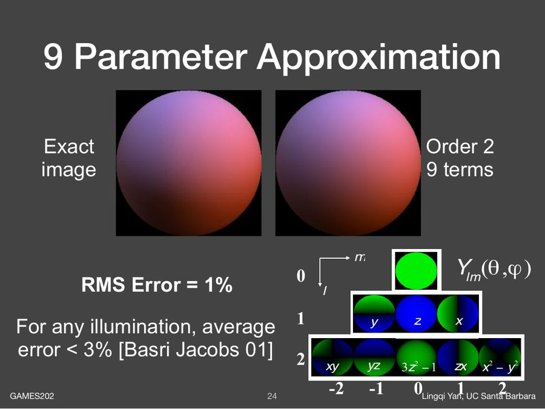
实时渲染里 irradiance 可以写成 \(E(\mathbf{n}) = \mathbf{n}^T M \mathbf{n}\)，\(M\) 是由 9 个系数组成的 \(4 \times 4\) 矩阵，只需一次矩阵向量乘和一次点积，游戏（Xbox）和 电影（Pixar）都在用。
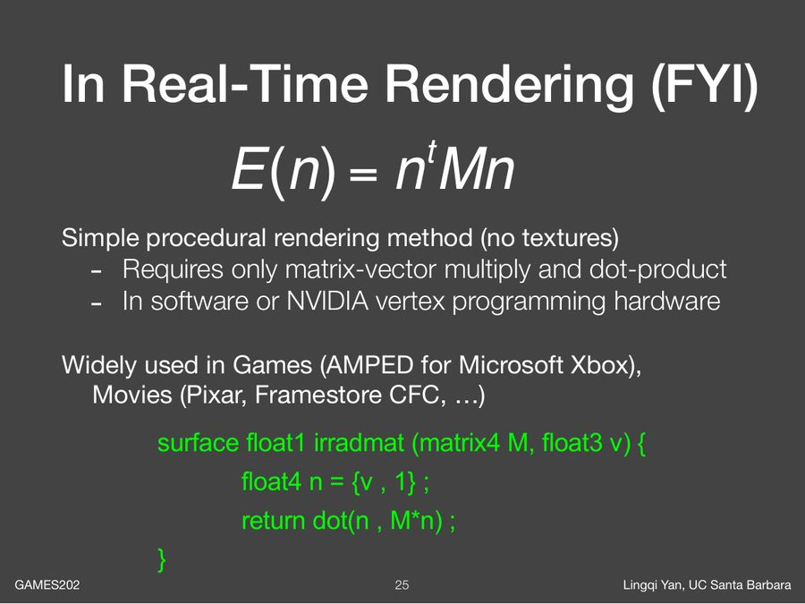
小结：基函数可以表示任意函数（基够多时）；保留特定频率成分（基少时）；把积分 化为点积。但这仍然只是环境光下的 shading，没有阴影。下一步 PRT 能处理阴影和 全局光照，代价是什么？
5. Precomputed Radiance Transfer（PRT）
5.1 思想（Sloan et al. SIGGRAPH 2002）
环境光下的渲染：
暴力计算：环境光分辨率 6 × 64 × 64，每个点要算这么多次。
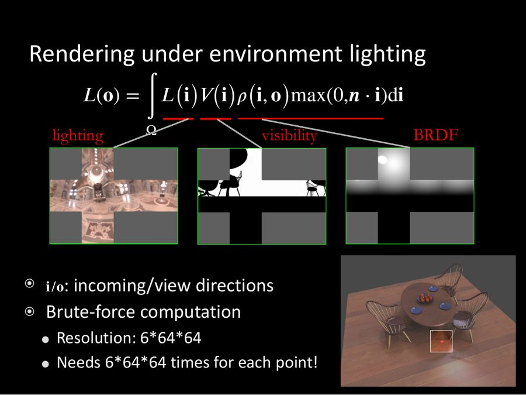
PRT 把被积函数分成 lighting 和 light transport（其余所有项）两部分：
- 用基函数近似光照：\(L(\mathbf{i}) \approx \sum_i l_i B_i(\mathbf{i})\)
- 预计算阶段：计算 light transport，投影到基函数空间
- 运行时阶段：diffuse 是点积，glossy 是矩阵向量乘
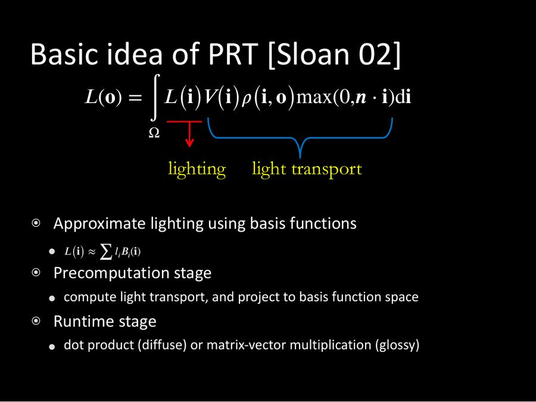
5.2 Diffuse 情形
渲染化为一个点积。\(T_i\) 是每个顶点上的 light transport 系数：把第 \(i\) 个基函数 当作光照（"some weird lighting"）去渲染场景，可以包含阴影和 interreflection。
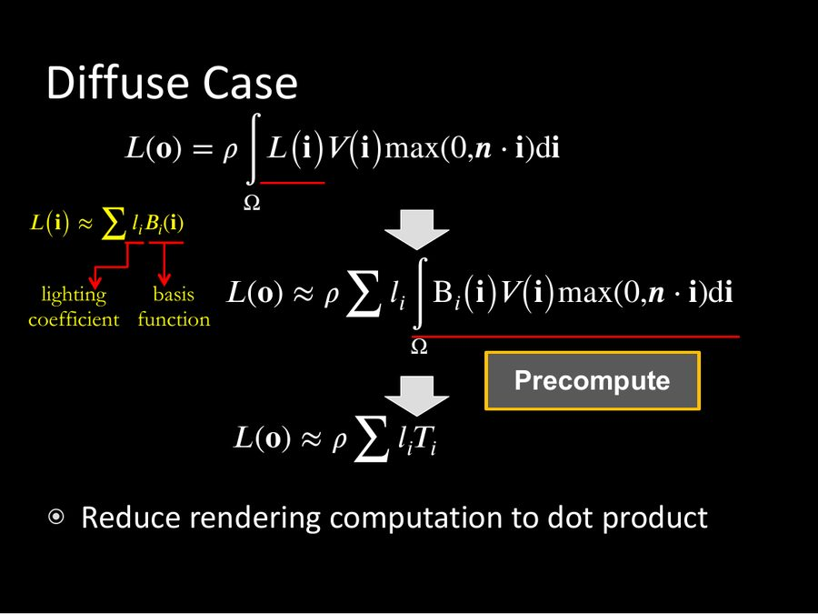
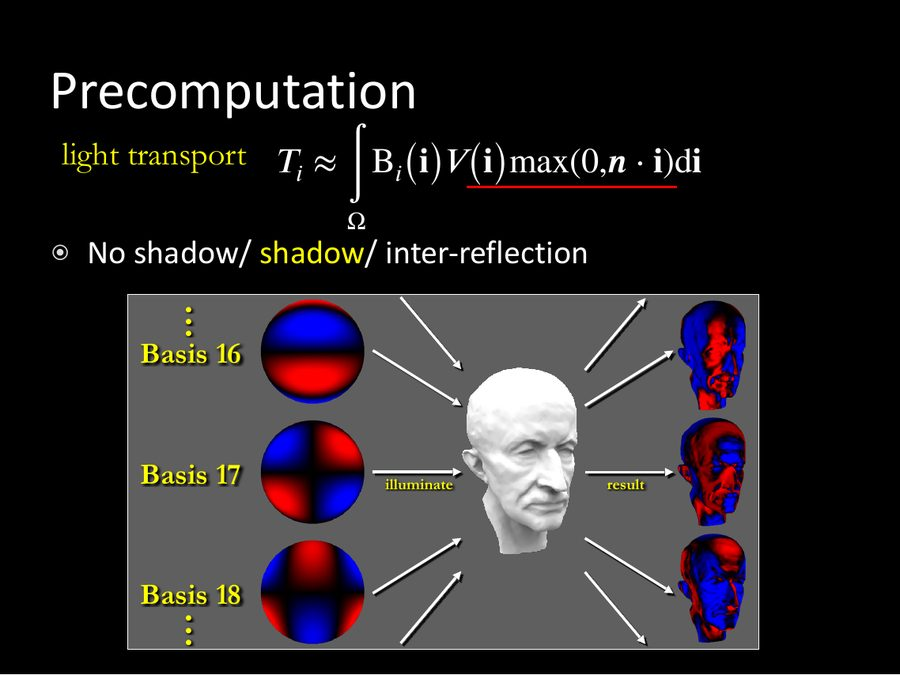
运行时：先把光照投影到基函数得到 \(l_i\)（或者直接旋转光照的 SH 系数而不重新 投影），再算点积。很容易在 shader 里实现。
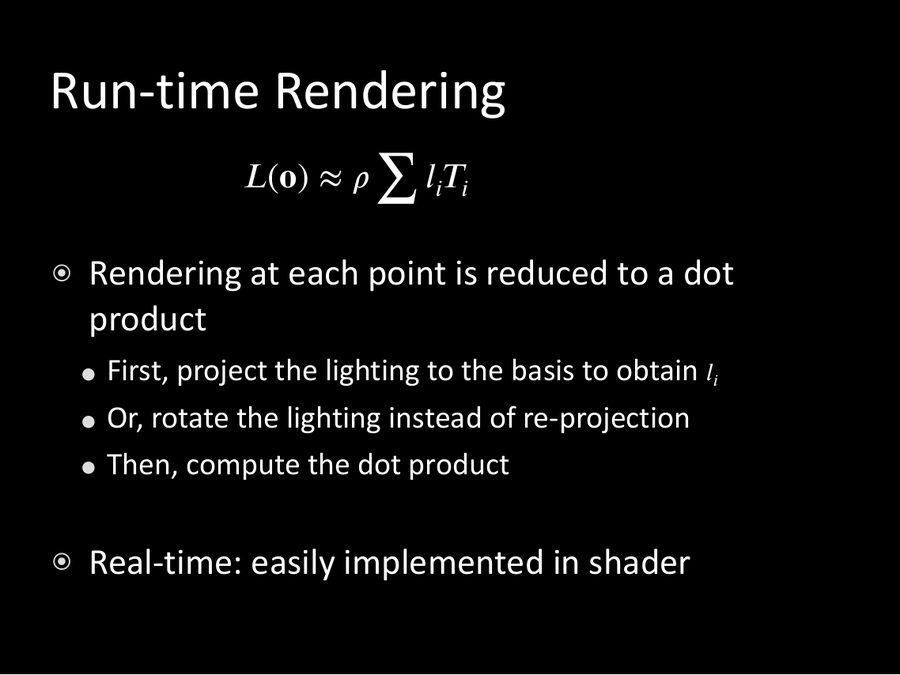
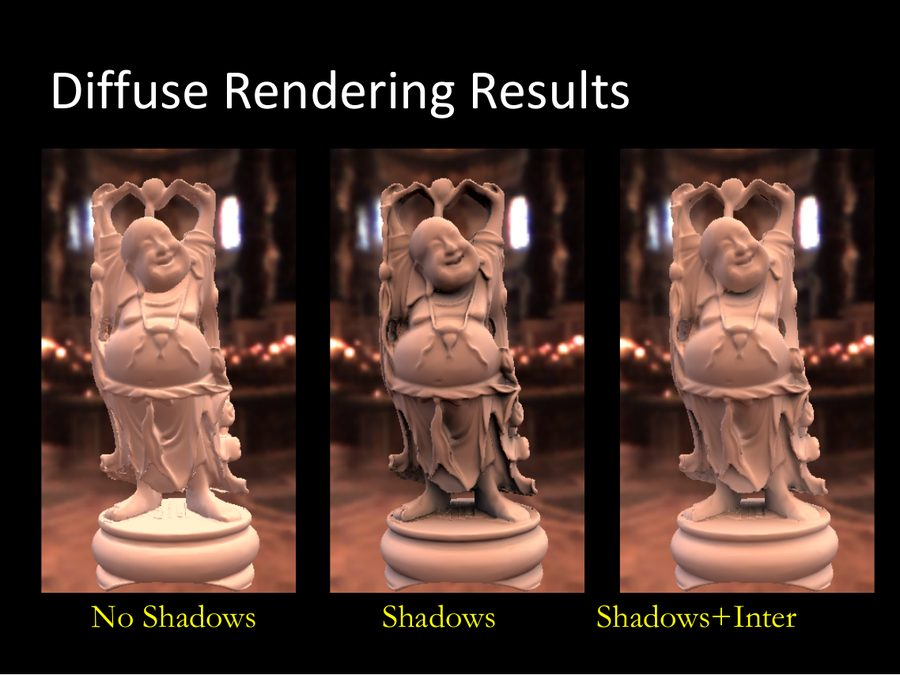
5.3 为什么是点积
另一种推导：光照和 transport 都投影到 SH， \(L(\omega_i) \approx \sum_p c_p B_p(\omega_i)\)，\(T(\omega_i) \approx \sum_q c_q B_q(\omega_i)\)，
看起来是 \(O(n^2)\)，但 SH 是正交归一的：\(\int B_i B_j = 1\)（\(i = j\)）否则为 0， 所以只剩 \(\sum_i c_i c_i\)，是 \(O(n)\) 的点积。
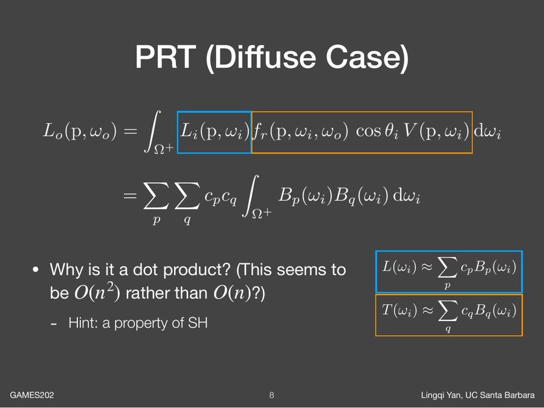
SH 的好性质：orthonormal；投影 / 重建简单；旋转简单（旋转后的函数的 SH 系数是原系数的线性组合，同一阶内部变换）；卷积简单；基函数少时只保留低频。
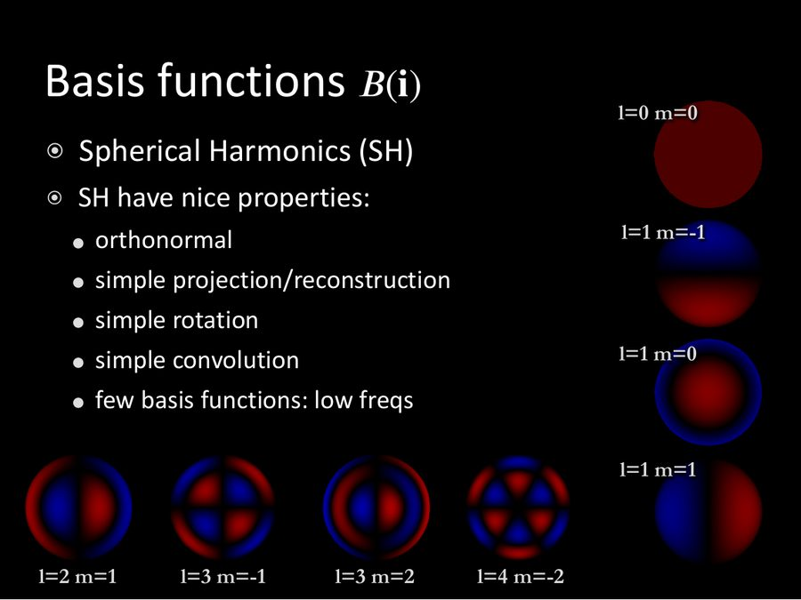
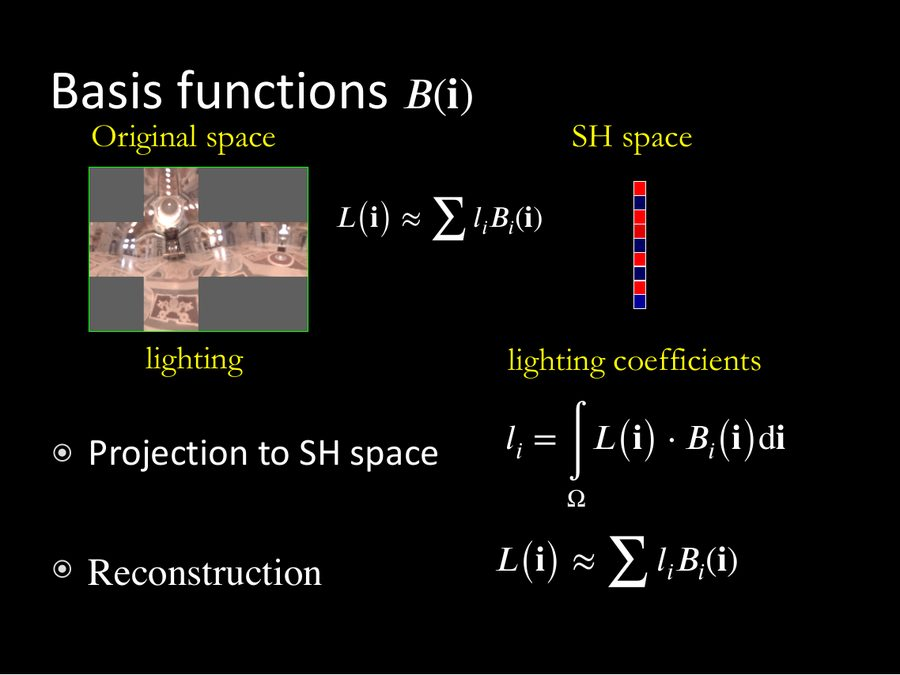
5.4 Glossy 情形
BRDF 依赖 \(\mathbf{o}\)，所以 transport 是 \(\mathbf{o}\) 的函数 \(T_i(\mathbf{o}) \approx \sum_j t_{ij} B_j(\mathbf{o})\)，
每个顶点存一个 transport matrix，渲染是向量乘矩阵再按 \(\mathbf{o}\) 重建。
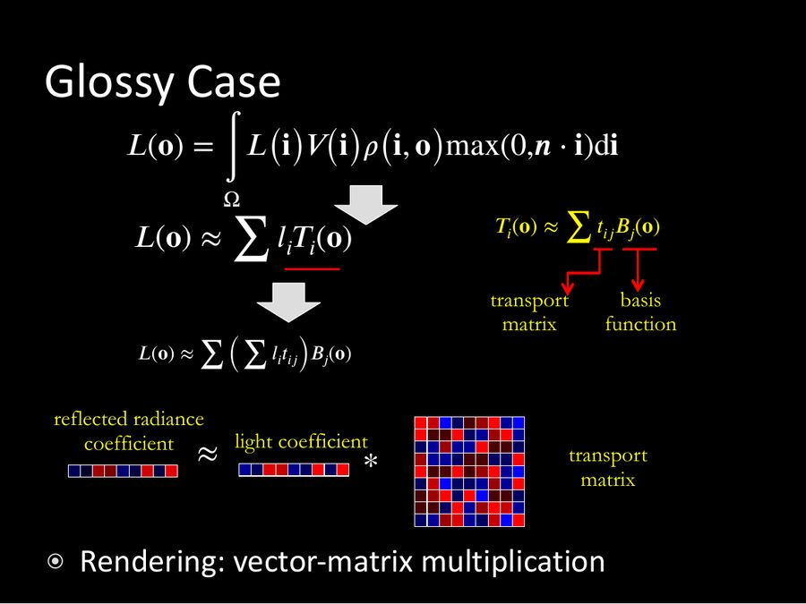
时间复杂度：SH 基数一般 9 / 16 / 25。Diffuse 每点一个 16 维点积；glossy 每点 16 维向量乘 16 × 16 矩阵。当年 50K 面的 glossy 物体在 P4 + Radeon 8500 上 3.6 fps。
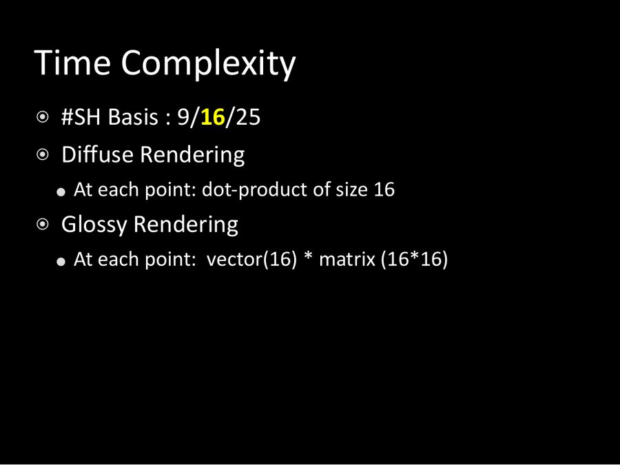
Interreflections 和 caustics：预计算时可以包含任意复杂的传输路径 （LE、LGE、L(D|G)E、LS(D|G)E），运行时开销与传输复杂度无关*。任意 BRDF （各向异性、空间变化）都可以。
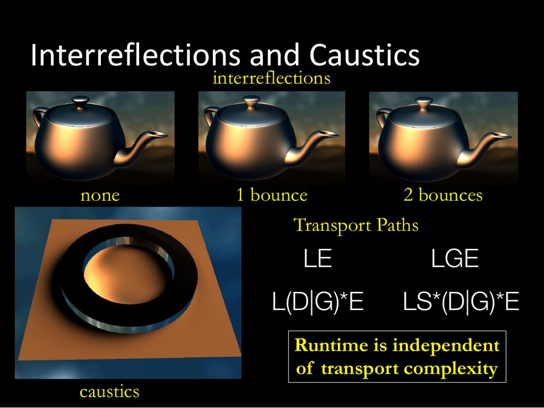
5.5 总结与局限
Sloan 02：用基函数（SH）近似光照和 light transport；预计算并存储 light transport； 渲染化为 diffuse 的点积或 glossy 的向量矩阵乘。
局限：
- 低频（SH 的本性）
- 光照可以动态，但场景和材质必须静态：改变场景或材质会使预计算的 transport 失效
- 预计算数据量大
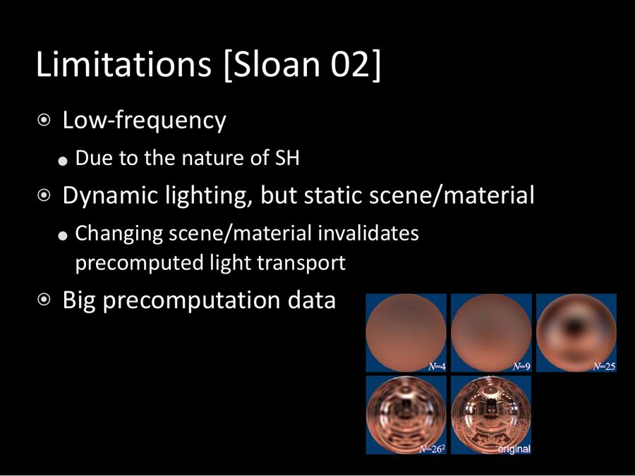
后续工作：更多基函数（wavelet、zonal harmonics、spherical Gaussian、piecewise constant）；点积 → triple products（把 visibility 单独拆出来）；静态场景 → 动态 场景；固定材质 → 动态材质；其他效果（半透明、毛发）；预计算 → 解析计算。
6. Wavelet：all-frequency
2D Haar wavelet（Ng et al. 03）：把 cube map 的每个面做小波变换，只保留少量 非零系数（0.1% 到 1%）。这是非线性近似（保留哪些系数取决于函数本身）， 是 all-frequency 的表示。
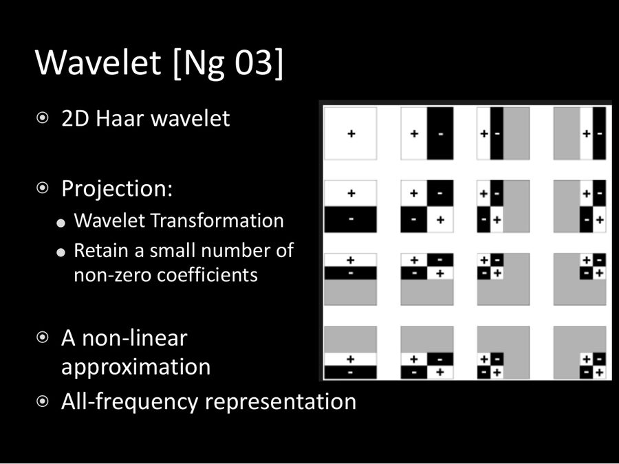
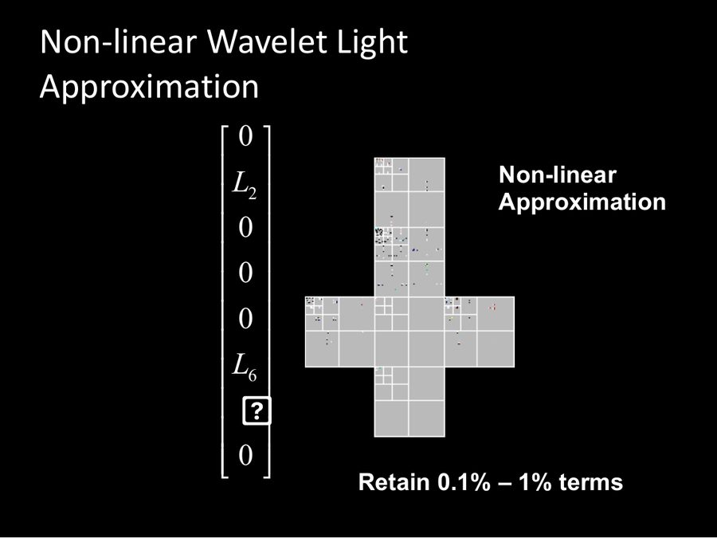
对比：茶壶在 Grace Cathedral 下，SH（低频）阴影模糊，wavelet（全频）阴影锐利。 代价是小波不方便旋转，光照旋转时要重新投影。
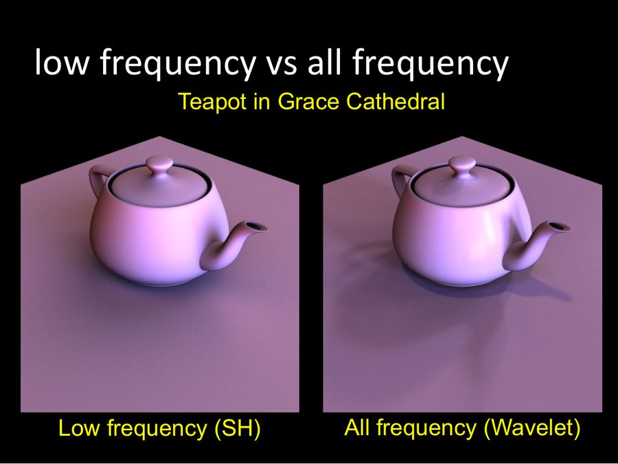
Comments